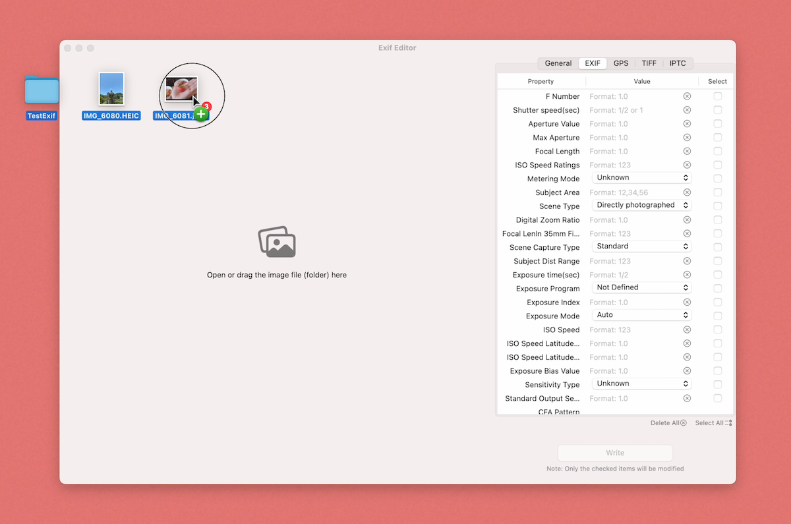

Exif编辑器

功能介绍
这是一个图片文件的Exif编辑器
你可以查看和编辑Exif、GPS、TIFF和IPTC分组中的属性信息

你可以一次性导入多个图片文件。
You can import multiple image files at once.
可以同时选择图片文件或文件夹，App负责挑选和显示出支持的文件。
You can select image files or folders at the same time, and the app is responsible for selecting and displaying supported files.
点击某个图片文件，即可显示出来相关属性信息。
Click on an image file to display its related attribute information.
你可以修改（清空）某个属性的值，然后勾选希望修改这个属性。
You can modify (clear) the value of a property and then check the property you want to modify.
必须勾选后才能写入，这是因为App将不对未勾选的属性做任何操作，帮你保留它原来的样子。
You must check it before writing, because the App will not do anything with the unchecked attributes, helping you keep it as it is.
因为有些属性是只读的，所以它未提供勾选框。
Because some properties are read-only, they do not provide a check box.
为图片添加GPS信息时，你需要通过长按地图来选择位置，而不是手动输入经纬度，但你可以清空它。
When adding GPS information to an image, you need to long-press the map to select the location instead of manually entering the latitude and longitude, but you can clear it.
你可以同时选择多个图片（窗口左下角有全选按钮，或通过鼠标框选），一次将属性值写入到多个图片中。
You can select multiple images at the same time (there is a Select All button in the lower left corner of the window, or use the mouse to select a frame) to write attribute values to multiple images at once.
点击“写入”，将会依次为每个图片写入信息。
Click "Write" to write information to each picture in turn.
注意！写入操作将来原文件上进行，无法恢复，请注意备份。
Note! The write operation will be performed on the original file and cannot be restored. Please make sure to back it up.